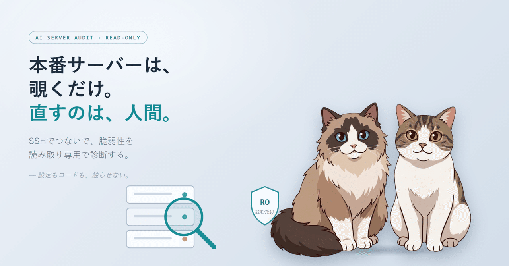

AIエージェントにコードのセキュリティ監査を任せる流れを、稼働中のサーバーにも広げた。ただし、サーバーには一切触らせない。完全な読み取り専用で「ここをこう直した方がいい」という提言だけを出させ、適用するかどうかは必ず人間が判断する——という線引きを、なぜそうしたかの記録。
直近で公開していたのは、AIエージェントにコードのセキュリティ監査を任せるための汎用プロンプト集だった。脆弱性や設定の穴を洗い出させて、現行機能を壊さない範囲で直すところまでやらせる設計になっている。
今回はそれを、コードだけでなく「動いているサーバーそのもの」にも広げたかった。SSHでつないで、OS・SSH設定・公開ポート・権限まわりを診断させる。やることはセキュリティ点検だが、コード監査と決定的に違う点をひとつ最初に決めた。サーバーには、一切触らせない。
コード監査では「直していいよ」と言える。手元のリポジトリが相手なら、最悪 git で戻せるからだ。ところがサーバーは話が別だった。
サーバーは、「直す」と「壊す」の距離が近すぎる。コードと同じ感覚で「ついでに直しといて」をやらせるのは、自分にはどうしてもこわかった。
なので、コード監査とは真逆の方針を最初に固定した。AIにできるのは「覗くこと」だけ。状態を変えるコマンドは、最初から禁止リストに入れてある。
見つけた問題は、レポートに「提言」として書き出す。ここをこう直した方がいい・理由はこれ・適用するとこういう副作用がある、という形で。でも、適用はしない。最後にサーバーへ手を入れるのは、必ず人間。
SSHやファイアウォールまわりの提言には、回避手順をセットで付けるルールにした。たとえば SSH の設定を変えるときの定番の注意は、こんな項目になる。
提言そのものよりも、この「適用するときの怖さ」を一緒に渡すことの方が、たぶん大事だった。
読み取り専用にしても、もうひとつ気をつけたいことがある。覗きに行った先のサーバーに、AI 向けの罠が仕込まれているかもしれないという前提で動かすことだ。
コードのリポジトリと違って、サーバーは他人の運用領域が混ざりやすい。そこを覗いた結果として、別の誰かの秘密まで流出させない、という線も最初に引いておく。
「ついで」と言うには大きい作業だったが、見る観点が今のセキュリティの常識に追いついているかも一通り点検して、足りない所を増やした。たとえば SSH なら、設定がオンかオフかだけでなく実際に効いている暗号方式・鍵長まで見る。よくある見落としもチェックリストに足した。
どれも、見るだけ。状態は変えない。
使い方はコード監査のときとほぼ同じで、診断したいサーバーの接続先を渡して「このサーバーを診断して」と頼む形にした。観点を絞りたければ引数で指定、省略すれば全部見る。広く並列で見る Claude Code 版、一本で深く掘る版、別の AI ツール向けの版を用意してある。レポートは話しかけた言語のまま返ってくる。
ひとつだけお願いがあって、これは自分が管理しているか、診断の許可をもらったサーバーにだけ使ってほしい。他人のサーバーを勝手に覗くための道具ではないので。
作ってみて思ったのは、AIに任せるときいちばん難しいのは「どこまでやらせるか」の線引きだ、ということだった。コードには「直していいよ」と言える。でも本番のサーバーには、「見て、教えて。手は出さないで」と言う。同じ監査でも、相手との距離の取り方を変える。
こわいことを任せるときほど、できることを最初に小さく削っておく。当たり前かもしれないけれど、これを忘れないようにしたい。小さく。